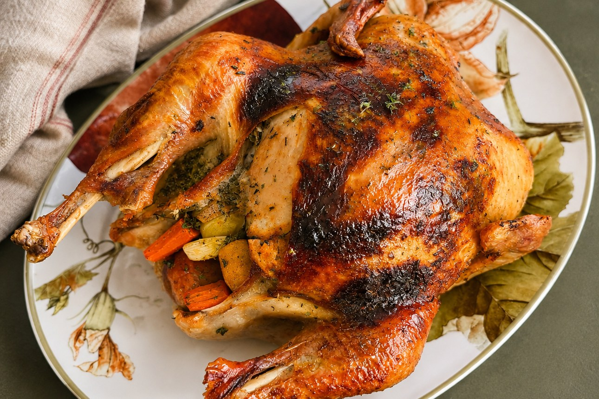

She’s the Goose

Thanksgiving · The Turkey
Brown butter, sage and reduced apple cider under the skin, a maple-Dijon glaze for the last half hour, and a sweet caramelized shallot gravy.
For the turkey & pan
For the brown butter
For the glaze
For the shallot gravy
The night before: dry brine. Remove the neck and giblets. Do not wash or rinse the turkey. Pat it thoroughly dry with paper towels. If the label says natural and not enhanced, salt the whole turkey with about 1 tablespoon Diamond Crystal kosher salt per 4 pounds (or half that volume of Morton). Set it on a rack over a tray and refrigerate uncovered overnight. If the turkey is pre-brined, self-basting or injected with a salt solution, skip the salt.
Reduce the cider. Simmer the cider in a small pan until it reduces to about ¼ cup. Let it cool completely.
Make the brown butter. Brown ½ cup of the butter until it smells nutty and turns amber, then cool until no longer hot. Combine it with the remaining ½ cup softened butter, the sage, thyme, rosemary, garlic, Dijon, pepper, lemon zest and 2 tablespoons of the cider reduction. Save the rest of the reduction for the gravy. The browned butter will leave the mixture too soft to spread, so refrigerate it for 20–30 minutes, stirring once or twice, until it firms back up to the consistency of soft, room-temperature butter. If it gets too firm, let it sit out for a few minutes.
Butter the turkey. Take the turkey out of the refrigerator about an hour before roasting and heat the oven to 325°F. Gently loosen the skin over the breast and spread most of the butter underneath, then spread the rest in a thin layer over the skin. Loosely fill the cavity with the lemon halves, onion, apple and herb sprigs.
Roast. Arrange the carrots, celery and shallots in a roasting pan and pour in the stock. Set the turkey breast-side up on a rack, or right on the vegetables. Roast at 325°F for about 15 minutes per pound, roughly 3 to 3½ hours for a 12–14 lb turkey. Tent loosely with foil if the skin darkens too quickly.
Glaze. Whisk the maple syrup and Dijon together. About 30 minutes before the turkey is done, brush the glaze all over the skin and finish roasting.
Check the temperature. Use a thermometer in the thickest part of the breast and the innermost thigh, avoiding bone. Take the turkey out when the breast reads 160°F and the thigh reads at least 165°F; the breast will rise to 165°F as it rests. Rest 30–45 minutes before carving.
Make the gravy. Strain the pan juices and skim off the fat. In a saucepan, cook the sliced shallots in the butter over medium-low heat for 15–20 minutes, stirring, until golden and sweet. Stir in the flour and cook 2 minutes. Gradually whisk in 2½ cups drippings and stock, then add the cider reduction a little at a time. Simmer until glossy and thickened, adding more stock as needed. Finish with the vinegar and season with salt and pepper.
Start the night before. The overnight dry brine seasons the meat all the way through and dries the skin so it roasts golden. Check the label first: an enhanced or self-basting turkey is already salted.
Trust the thermometer. Fifteen minutes a pound is a guide; every turkey and oven is different, so start checking about 30 minutes early.
On the same table. The cider and shallots tie it to the sourdough stuffing, which can bake while the turkey rests.
Food safety. Keep raw turkey refrigerated at 40°F or below and never rinse raw poultry. If your turkey’s label gives special preparation instructions, follow them.
Letters from She’s the Goose
A letter and a recipe from me, every Tuesday.
Thank you — look for a note to confirm.